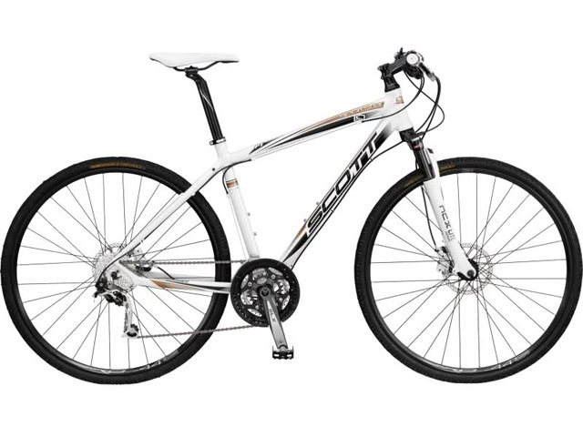

TIPOS DE BICICLETAS

Los diferentes diseños de las bicicletas están basados en su funcionalidad: para que tipo de terreno, desarrollo de velocidad, menor peso o mayor fortaleza, etc. Te vamos a informar de las características de los más usuales para ayudarte a elegir la bicicleta que mejor se adapte a tu persona y necesidades.
Bicicletas de montaña
Las bicicletas de montaña (también conocidas como MTB) están diseñadas para “fuera de ruta” por lo que son bastante resistentes. Están equipadas con llantas anchas con dibujos marcados para mejorar el agarre en terrenos sueltos. Regularmente usan manubrios rectos o de doble altura.
Las MTB se pueden encontrar sin suspensión (rígidas), con suspensión delantera (hardtail) o con doble suspensión (full-suspension) dependiendo de su especialidad.
Bicicletas de ruta

Son bicicletas orientadas a obtener velocidad en pavimento, de construcción más ligera que otras bicicleta, están dotadas con ruedas más grandes, delgadas y provistas de llantas angostas y con dibujo liso. Las bicis de ruta utilizan manubrios drop-bar para lograr una postura más aerodinámica.
Bicicletas hibridas

Las bicicletas híbridas son bastante versátiles ya que combinan características de las bicis de montaña y de las de ruta.Estas bicicletas nacieron como una solución para quienes necesitan una bicicleta para la ciudad, pero que tenga la flexibilidad de ser usada en diferentes terrenos. Los cuadros son resistentes y con una geometría que permite adoptar una posición cómoda que permite relajar los brazos y el cuello.